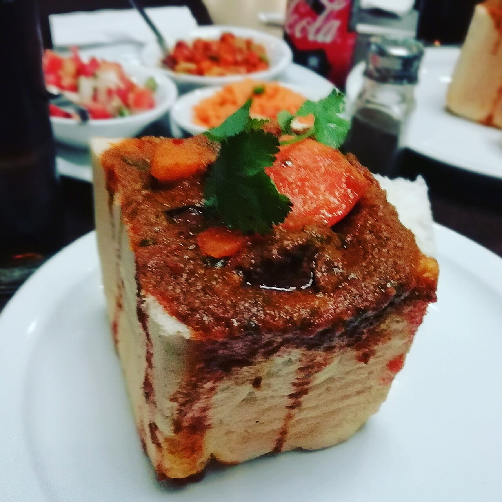

About this dish
Bunny chow was created in Durban, South Africa, by the city's Indian community. It is a hollowed-out loaf of bread filled with a hot curry of lamb, mutton or beans. The bread acts as an edible bowl, and you eat it with your fingers by tearing off the bread and dipping it in the curry.